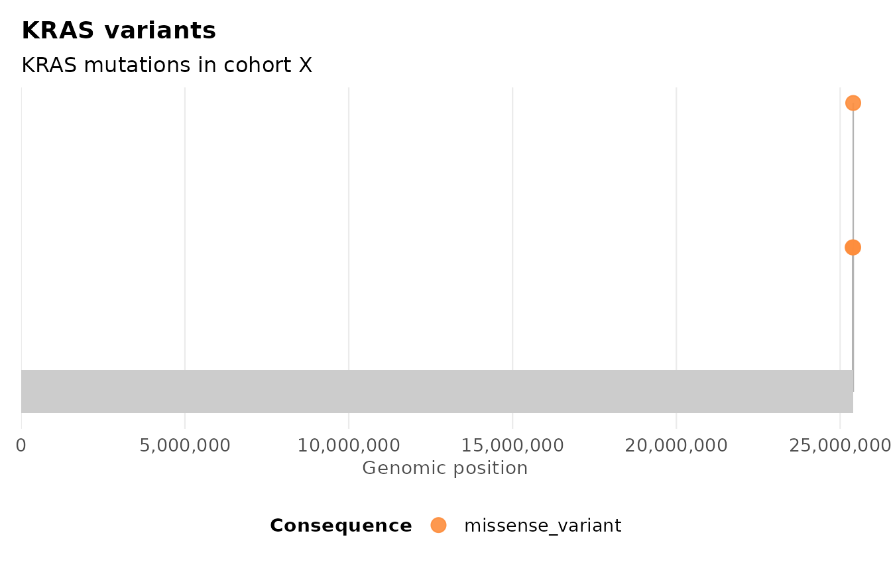
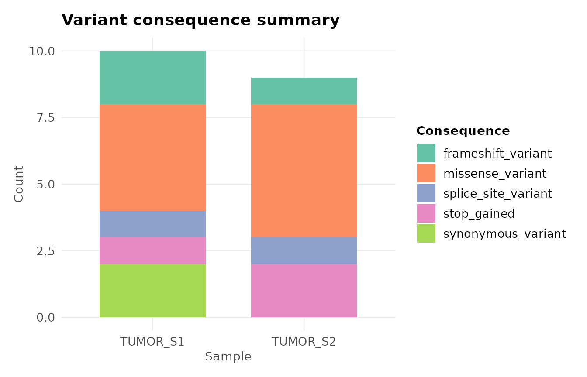
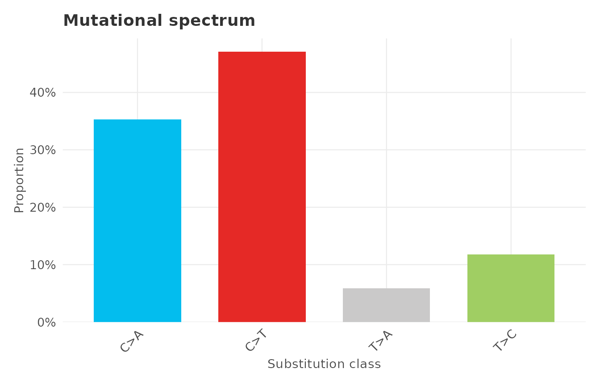
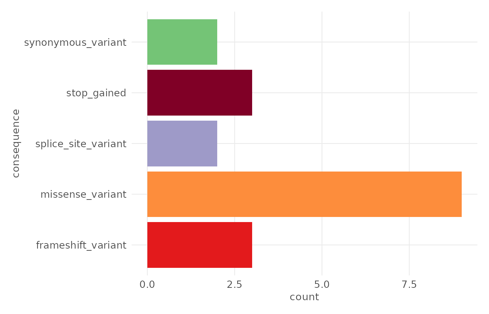

Customising plots with ggplot2
Source:vignettes/articles/customising-with-ggplot2.Rmd
customising-with-ggplot2.Rmd
library(ggvariant)
library(ggplot2)
vcf_file <- system.file("extdata", "example.vcf", package = "ggvariant")
variants <- read_vcf(vcf_file)
#> ℹ Reading VCF: example.vcf
#> ✔ Reading VCF: example.vcf [24ms]
#>
#> Loaded 19 variant records across 7 chromosomes.Every ggvariant plot function returns a standard
ggplot object (not a subclass, not a wrapped list), so any
ggplot2 layer, scale, theme, or annotation composes onto it
exactly as it would onto a plot you built by hand.
Adding layers
plot_lollipop(variants, gene = "KRAS") +
labs(subtitle = "KRAS mutations in cohort X") +
theme(legend.position = "bottom")
Overriding a scale
ggvariant sets a fill or colour scale internally, so
replacing it means adding a new scale_* call after the plot
is built – ggplot2 uses the last matching scale in the
layer stack.
plot_consequence_summary(variants) +
scale_fill_brewer(palette = "Set2", name = "Consequence")
#> Scale for fill is already present.
#> Adding another scale for fill, which will replace the existing scale.
Building on theme_ggvariant()
theme_ggvariant() is exported, so you can start from it
rather than theme_minimal() when building a custom plot
from scratch, or layer further theme() tweaks onto a
ggvariant plot’s existing theme.
plot_variant_spectrum(variants) +
theme(
axis.text.x = element_text(angle = 45, hjust = 1),
plot.title = element_text(colour = "grey20")
)
#> Excluded 2 non-SNV records from spectrum plot.
Combining with gv_palette()
The built-in palettes are exported as plain named character vectors,
so they work equally well outside a ggvariant plot function
– for example, when building a custom ggplot2 call directly
against a gvf object.
ggplot(variants, aes(x = consequence, fill = consequence)) +
geom_bar() +
scale_fill_manual(values = gv_palette("consequence"), guide = "none") +
coord_flip() +
theme_ggvariant()